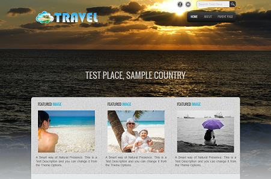
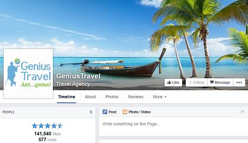
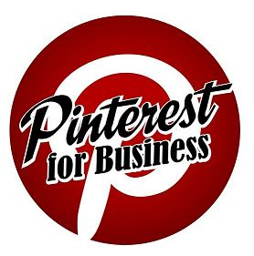
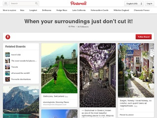
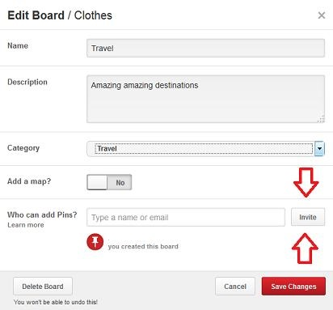
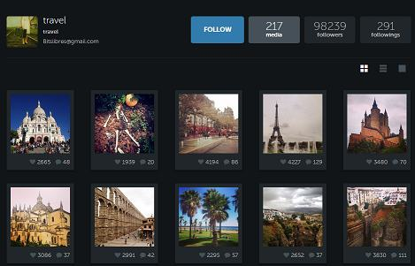
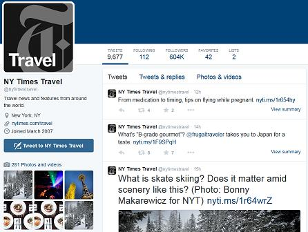
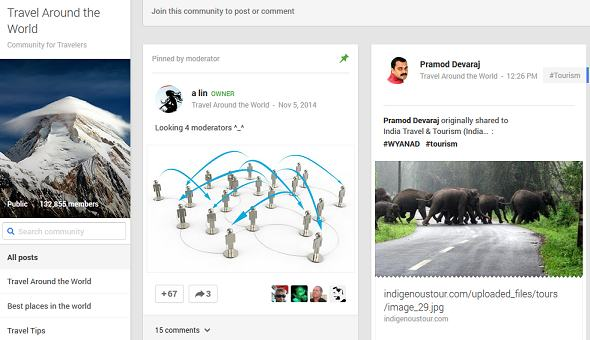

As you might know if you’re running a tourism agency it’s getting harder and harder to stay competitive and in this business in these modern days when many prefer to go online and book their vacations for themselves. There are great resources already for finding the hotel on your own, for finding the cheapest flights on your own and for creating your own vacation the way you want it. That doesn’t mean though that there aren’t other people out there that want all these stuff taken care of by someone else and those are the people you want to reach. In this guide I am going to show you exactly how to do that!
First of all, in order to successfully promote your tourism agency and offers through social media you will need a website. You might think it’s outdated and you don’t need it as it’s easier to post your offers on Facebook directly for example and people will come. It is true, though this is not a long term strategy. The idea with a site is to have one place that you promote everywhere and where you can quickly update offers or change them when you need to. Drive all the traffic to that site and even if the offers are no longer valid after a period of time and someone comes to check them out they will still reach your site and check your other offers instead of you just loosing that lead.
Your site should be easy to use, catchy and updated often. Also try to make the offers as interesting as you can to catch the attention of everyone that you manage to bring to your site. I am not going to talk more about that, if you already have a site that’s great, if not definitely build one. If you don’t have the technical skills to do so or the money to build a professional looking site I’d suggest you go with wordpress. Either go for a free blog at wordpress.com or blogspot.com or get a domain and hosting and install your own version, that will allow you to install a travel theme that would make it look quite good. Here’s an example wordpress travel theme . There are many more, once you have your wordpress blog you can go looking for the one you like.

This one is free, there are others, some better looking than others that can go anywhere between $35-$100 and will make your site looks really professional. If you’re going this way spend a little time researching premium wordpress themes online and you will surely find something to your liking.
Now that we’ve established the need of having an actual agency travel site where you publish your offers let’s concentrate on how to actually bring in traffic. This is the main problem of everyone struggling to have their own online source of income. Most go the SEO and link building way, establishing their site, building links to it and waiting to get traffic from Google and the other search engines. This is a good route but it requires time, especially if the site it new you will have to wait for at least a couple of months before you start seeing an increase in your traffic after months of link building.
Besides taking time the link building method has another great disadvantage ( a really serious one in my opinion) you’re putting your source of traffic and income in the hands of Google and the search engines. As time has shown us again and again they change the way their algorithm works frequently and many times the regular sites that haven’t done anything too extreme have to suffer the most. So are you happy with relying on someone else, someone that you can’t even talk to and explain your side of the story?
Hope you’ve been patient so far as we’ve finally arrived to the part you were most anxious to read. How to start driving immediate traffic to your travel agency website through the aid of social media. These methods work great because they are immediate, you post about your offers on social media and you see the interaction right away, you see if people respond well to what you’re offering or not. If not you can get an idea about what and how to change and can do those changes right away and improve your strategy.
There are many social networks around, some better for some niches some better for others, ideally you should start with all and see which ones perform best for you. If you don’t have a lot of time you should hand pick 1-2 and stick with them, if you have a little more time on your hands though I suggest you go with all the top social media platforms as they can all have a different impact and drive different kinds of traffic to your website.
So let’s take them one by one and I will explain everything you need to do on each of them in order to start driving traffic right away.
Promoting your travel agency through Facebook
The beautiful thing about Facebook is that if you do it the right way your posts can become viral, and when your offers are shared by other people their friends start to see them in their news feeds too and you’ll have a reach like you wouldn’t have thought possible. Also Facebook as you might know is the social platform with the highest number of users so there definitely are a lot of leads for you here.
So what can you do on Facebook ?
There are several things to do, but lets start from the beginning.
1. Create your Facebook page. This is the first and most important step. You will need your own presence on Facebook and a page is the best way to do it. It’s easy to create a page, if you don’t know how, use Google and you will find plenty of tutorials. Make sure to fill in all the details like description, keywords, link to your site, make it look good with a nice logo and so on.
You will use this page every time you post something on your website, post it on your Facebook page too with a link to the actual offer on your website. This way it will act as a gateway, funneling people to your website. After you create your page make sure you post 15-20 offers on it before doing anything else so anyone that sees it won’t think it’s empty and not like it for that reason alone.
Here’s an example of a nice looking Travel related page on Facebook:

As a first step you can also ask some of your friends to like it so it doesn’t look like a newly created page and it has a couple of likes.
2. Now you will need to promote your page. There are 2 ways to do this, the way Facebook wants you to – spend on Facebook ads to get likes to your page and the way I’m going to teach you that won’t cost anything.
If you have the money and want to, you can try Facebook ads a little, though I really don’t recommend you do it especially if you never did it before as it will be expensive and not really worth it. Though if you try, the likes that come in this way are of high quality. One suggestion is cap your daily spend, make it like $5-$10 / day and see if it’s really worth it for you.
Here’s the better way to promote your Facebook page for free. You’re going to join groups and share and post in those groups about your page. Groups are a huge part of Facebook and a lot of people use them for different reasons so why not use them to your advantage? Some groups can be huge and have hundreds of thousands of members, some might be smaller and have only a couple hundred members.
Don’t be quick to dismiss the smaller groups though, sometimes they can be worth a lot more than the big ones. This is because big groups also tend to have a lot more posts added to them by their members so your post will fall below the fold really quick and only a small portion of the members will have the time to see it. On the other hand the smaller groups have fewer posts so your post has the chance of being on top for a longer period of time.
So getting back to it, what you need to do is find a lot of groups about travel and join them. After you have been approved as a member start sharing the posts you made on your page in those groups.

As for the searching and joining of the groups you can do that manually, that will take a while, or use a software specifically designed to help you with social media, JARVEE . It can automatically find thousands of groups for you for your given keywords and after that join them over time so you don’t get blocked by Facebook for joining hundreds of groups in one day. It will also help with sharing the post you made on all those groups, all you need to do is set it up and let it do the work for you.
To start you off here are a few big groups related to travel on Facebook, there are thousands more, some related to one region in particular others general:
| Group | Number of users |
|---|---|
| Toronto Flight Deals & Travel Specials | 83.209 |
| LETG (Lesbian Events & Travel Group) | 15.342 |
| Travellers | 8.590 |
| FB ASSOCIATION OF TRAVEL AGENTS | 14.546 |
| Travel and Tourism | 35.519 |
| NamLifts – Travel with Friends | 15.104 |
| Travelling Winemakers – Living the dream!! | 24.414 |
| Travel Worldwide | 22.344 |
| Go Travel | 9.087 |
These are just a couple of the groups you can find using the JARVEE group finder tool. Here’s a list with 269 such groups that I found in just a couple of minutes. Of course not all will be usable by everybody, depending on what kind of tourism agency you have you might target a country or area and not operate worldwide. That is why you will need to find the groups that are an exact match to your needs. These are just to get you started. Here is the 269 facebook travel groups file.
If you have offers only for a certain country/ area you can further refine your search for Facebook groups and only find groups that are about that. It’s also a good idea to create your own group, it will be practically automatically taken care of when you post in it so you don’t need to invest too much time into it.
For the above list I used only 5 keywords in the Group Finder tool, namely ” travel offer,travel,travel destinations,exotic destinations,travel agency” . You can add a lot more to this list and find a lot more groups. I also chose to find groups with a minimum of 500 users, you can go lower than that and find even more. When and if you run out of groups about travel, you can also try finding groups about “promote my business, promote my site” and so on. There are a lot of them and some do actually work and send you likes and traffic. Sky’s the limit when you’re doing this automatically and not wasting hours each day doing it manually.

Take action now, start implementing this and you will soon see a steady flow of traffic towards your site. This is just one of the things you can do on Facebook start with it and keep it going and after that you can also do the following:
– Directly contact other members.Extract members from targeted groups you find and send them direct messages within Facebook. If you join the group before sending the message it will create a link between you and those members and Facebook will actually deliver the message in their inbox. Make sure it doesn’t look like spam though, relate to them first before you start selling. Both the extraction and the message sending is done automatically by JARVEE after you set it up.
– Post on other Facebook travel pages. Believe it or not you are not the only one having a page about travel on Facebook, there a lot of other people, you can find those pages and go and interact with them. Post in those pages inviting people to your own page . Both the finding of the pages and posting on them is done automatically by JARVEE after you set it up.
As you can see there are a lot of things you can do on Facebook and it will work and drive traffic and new leads to your website, all you need to do is start implementing it right away. So stop procrastinating and do it! It will take a little while in the beginning as you get used to everything but in under a day you can have all these set up and running almost on auto pilot and you will see the benefits on your own.
Promoting your travel agency through Pinterest
Ok, so the title said promoting your travel agency through social media, so we’re not going to limit ourselves to using only Facebook. Pinterest is definitely a great platform on which to advertise your travel agency because you have access to a lot of amazing photos of all those exotic destinations and guess what – Pinterest users love amazing photos. Things here are even simpler than on Facebook, but let’s start from the beginning and take it step by step.

1. Create a Pinterest account. In case you’re new to Pinterest, boards are basically collections of photos, they are called boards because all photos are on display. you can create personal boards but that wouldn’t really help with the promotion. Make sure you fill in all the relevant details for your account and also make sure you link and verify your url in your Pinterest account ( this will consist of uploading a file to your site or adding a little line of code in your header file – it’s all explained nicely by Pinterest)
2.Create a couple of Pinterest boards. You can either group them by destinations or just create one board for your site and the rest about other related things so your account look as natural as possible. This you will have to decide on your own depending on your exact needs and what you’re promoting through your travel agency.
3. Start by adding at least 15-20 photos to those boards that link back to your site (the link back is called the source url). This will make it so if anyone on Pinterest clicks on one of your photos they will be sent to your site. You will need to keep adding 5-10 photos each day to all the boards, all using your site’s url. This way you’ll get traffic and back links that will also help with your SEO. Don’t worry, again JARVEE comes to the save, all you need to do is set everything up, load all the pictures you want, add your site and it will automatically post each day at the times you tell it to, all those pictures that will link back to your site. You can also add rss feeds as sources for the images and it will automatically extract them from there.

4. It’s time to start growing your account. The way things work on Pinterest is that each board can have its followers and also your account has its followers. So people can either follow you and all the images you post will show up in their image feed or follow one of your boards and see only images you post to that particular board. So what you need to do now is interact with as many people as possible in order to gain as many followers as possible. All these followers will see your pictures and if they re-pin them their followers will see them and the viral effect will start to take place.
So how do you gain as many followers as possible? There are several ways:
– Start following other people. You can search for them using targeted keywords like travel, travel destinations and so on. When you find those people (or you can find specific boards on this topic) follow them. This way they will receive a notification that you followed them or one of their board so most will come and see who you are. If you’ve set everything up nicely as I told you and also created those boards and added great images to them they might like what they see and some will follow back. Some won’t but it’s a numbers game. After a certain period of time ( 5-7) days you can unfollow the ones that did not follow you back so you don’t have an account with a follow to followers ratio that is out of balance.
You can do the auto follow/ un-follow by hand and it will take a while or once again, you can set JARVEE to do it for your and it will be a set and forget kind of thing.
– Start re-pinning other people’s pins. Don’t think that you’re doing free promotions for someone else, think of it as giving and receiving. As above, when you re-pin another pin the author will receive a notification about that and might come to see who you are and follow you. Again, this is a thing you can automatically set by using JARVEE.

– Start liking other people’s pins. This will have the same effect as the above actions, the author of the pin will be notified and might become a follower. Here you can use two strategies, either like the pins that have the highest number of re-pins so your are sure that is a great picture to like or you like the ones with the least amount of re-pins and make sure the users sees your notification and it’s not lost between hundreds of other notifications. Also you can either do it manually or automatically.
– One final thing you can do is commenting on other people’s pins. This will create interaction between you and that user, they will get a notification, they might want to answer and the chances of them becoming a follower are quite high if you do this right. Ideally you would do this manually as you can’t really target pins with relevant comments automatically, though if you want to, JARVEE can do that for you as well.
This is basically it. You will need to keep posting interesting images on your boards, re-pins some good images from other people too, so everything looks good. Keep following, liking and commenting on other pins and you will soon have a Pinterest account that will buzz with interaction and will drive a lot of high quality traffic back to your site.
There is one more advanced technique you can use here though I don’t advise you to jump into it straight away but first establish your presence on Pinterest. Any board can be a board where only the user posts or a collaborative board. Meaning you can get invited to post on other people’s boards and you can invite other people to post on yours. Why would you do that? Well here’s the interesting part.

Let’s say you have a board and invite 5 more people to post on it, they will become co-authors on that board, so every times any of you make a post on it that image will show up in the image feed of all the followers of all the authors of the board. This means you will increase the reach of that image by a lot as the other 5 people might each have hundreds or thousands of followers that will all see that pin when posted. This will enable you to use the power of the community and really benefit from it.
This concludes the Pinterest part of this guide, make sure you use Pinterest to your advantage as it’s quite easy to use once you get used to it and it can be an amazing source of traffic.
Promoting your travel agency through Instagram
I’ve picked this 3rd to talk about before Twitter and Google+ because it works a little like Pinterest, the one we talked about before. You might think Instagram is for kids and wouldn’t like to bother with it, but you’ve got it quite wrong. Instagram is a really powerful social media site that can drive amazing traffic to your website. Here are two articles that will help further with this Instagram Marketing: How To Get Your First 1000 Followers. and How To Grow Your Instagram Accounts Like a Pro With JARVEE A lot of powerful brands are using it successfully and they are reporting that it works better for them than Facebook and Twitter combined.
So, why would you try to market your travel agency through Instagram? Simple – it’s because like Pinterest, it’s a visual environment. People like amazing images, share and follow them really quick if they like what they see. The only downside of this platform is that because the way it was designed you can only post images on it from you smartphone. You cannot post images online from your computer or by any other means. This is where JARVEE comes to the rescue, it does have the ability to post for your on Instagram. After the posting is done there are a lot more things it can automatically do for you so your account grows really nice and quick.
So let’s see how to start to promote your travel offers on Instagram
1. Create an Instagram account, do that from your phone so you get accustomed with the way it works, set everything up, details about you/you company, enter an url and nice profile images. Make your account look good so people that see it will follow you without thinking too much about it.
2. Post 15-20 nice images about your offers so your account doesn’t look brand new and people actually take a look at it. After the initial posting you should add 5-10 new images each day to keep the ball rolling. Make sure to use up to 30 relevant hashtags with each image, they will increase the chances of other people finding your posts.
3. As before it’s time to start growing your account. You will need as many followers as you can get in order for them to like your images and share them with their friends so more people see your offers. This part will go pretty much the same as on Pinterest, you will need to :
– Start following other people. Use the search function and find people with interests related to travel, be creative and target them as best as you can. I could put here some general travel related terms but the truth is that every travel agency is different and you should know better your target audience. The people you follow will receive a notification and will follow you back if they like your account, or sometimes without even looking.

Of course there are always people that won’t follow back, some might be dead accounts or not that active, some might not be interested. For this reason you should un-follow the people that don’t follow you back after a few days (3 – 5 days). If you have your target keywords ready you can do both these tasks automatically with JARVEE, just enter your keywords, select how many follows you want to do each day and you’re done, the software will do the follows for you. Also set after how many days you want to un-follow people that did not follow back and that’s it, everything is on auto- pilot.
– Start liking other people’s images. People like to see they are appreciated and liked and they also receive a notification when you do this. For those two reasons many will be grateful and follow you in return. If they don’t the first time keep liking stuff from the same people and they will start noticing you after a while and will want to reciprocate at least.
– Start commenting on other peoples’ images. This is a task ideally done by hand as done automatically it might not target the correct images with good comments. You should try doing it manually and see what effect it has and if it works for you. It can also help to create connections that could help you to further grow your account. This action can be automated by the use of JARVEE if you so like, just make sure to use it properly and don’t overuse it and it will work nicely.
Check out the nice stats each of this account’s images have :

One final thing you can do on Instagram to boost your followers growth is to talk with other people on Instagram with big accounts and ask them to post one-two images from you to their followers. This works great, however most of those people will ask for money in case you don’t have a big enough account yourself so you can make a trade.
Post amazing images for your travel offers, keep growing your account and you will see quite a nice and steady increase in traffic, it works and it works great, you just need to put the initial effort of setting everything up in the beginning.
Promoting your travel agency through Twitter
I am quite sure you know about Twitter, everybody is using it and everybody has an account there. If used correctly, just like the other social networks it can have a good impact on your marketing and drive a good amount of traffic and leads to your site. The most important thing is to have good quality followers that will actually see what you share. You must have seen everywhere people offering thousands of twitter followers for a few bucks, those are pretty much useless. Except for the fact that it makes your account look a little better because you have a lot of followers they are good for nothing. Most of those accounts are bots so no one will ever see what you post.
Let’s start with our strategy or promoting a travel agency on Twitter:
1. Create an account, the good thing here unlike the other social platforms is that you can create an account in the name of your site, you don’t need to create it as you. So do so, create a twitter account for your website. Make sure to enter all the necessary information, a killer description, add your site, upload nice images for your profile and twitter page. Make your account likeable so people will hit the follow button easily.
2. Post 15-20 tweets, add images and info about your offers and post them. They will look great on your profile and images really do well conversion wise on twitter. After that you should keep posting 5-10 tweets each day. Try not to post only offers, you can post other things related to your travel niche, a joke once in a while, news, information about places and so on. Keep posting constantly and your account will begin to have a lot of information quickly.
You can schedule everything through JARVEE so you don’t need to manually go several times a day and post. You can either schedule posts in advance or if you have a rss feed of all your offers you can enter it in JARVEE and it will extract those offers and create posts with links back to your site. Tell it how often to post each day and you’re set. You can get other feeds from news related travel sites and have your account be like an aggregator for everything related to your niche.

3. Growing your account. Followers is the name of the game on Twitter as well, you need to get as many followers as possible so you need to start interacting with other people so they notice you and they follow you. Here’s how to do that:
– Follow other people. Search for people that would like to follow you and what you provide and follow them. As with every other social network, they will receive a notification and most will check you out, if they like what they see some will follow back.
This is true for all the social networks though, some accounts are used rarely, some are dead and some people are just not interested in what you offer, so not all will follow you back. After a certain period of time (5-10 days) it’s a good idea to un-follow the ones that did not follow you back so you keep your followers/follows ratio in a good balance. JARVEE will help with the following and un- following of other people, again all you need is the keywords for which to search all these people.
– Follow people back. Just like you follow other people and want to be followed back in return other people will follow you with the same idea in mind. Although these might not be the people you want to target, in the beginning it’s a good idea to follow everybody back so your have a nice looking profile with a decent amount of followers. If you don’t follow them back fast they might un-follow you, so keep that in mind.
Check out how good it can get on Twitter:

-Re-tweet other people’s tweets. Find tweets that are in the same area of interest as your page and re-tweet them. They don’t necessarily have to target the exact same thing as you do but they can be closely related. There are a lot of interesting things on twitter that you can find and re-tweet. The user that made that tweet will get a notification and might follow back. If he doesn’t do that the first time just keep at it. You can also target certain people with this. Find people that are high up with great accounts and re-tweet and interact with them often. They will eventually notice you and will help if you ask nicely or at least re-tweet some of your tweets for all their followers to see.
This is basically it, schedule posts, get other posts from other people on twitter, get some posts from different other rss feeds that are highly relevant and you have a recipe for a great twitter account. People on this social website are really active and you will see your account growing really fast and starting to work for you. Keep at it and it will soon pay off.
Promoting your travel agency through Google+
Yes, you’ve heard me right, you should definitely use Google+ to promote your travel agency. Most people disregard it but it can be an extremely good social platform to take advantage of. Using Google+ is kind of like using Facebook but with fewer restrictions, easier and without the probability of being penalized for everything you do.
On G+ groups are called communities, most of them are instant approval so you don’t need to wait for someone to approve you before you start posting. You can also create your own page on G+ and link it to your site so make sure to create that as well, it won’t take too much and you can just pull in a rss feed from your site and keep that page updated on auto pilot.
Ok, so what’s there to do on G+ in order to better market your travel agency’s offers?
1. In case you don’t have one – create a G+ account, it’s quite easy and it takes just a little time. As with all the rest make sure you fill everything up, details, your url, some nice profile and header images and so on. A nice and appealing account is also performing good when it comes to followers and conversions. As we’re on this step also create a page and a community on Google+ . Fill in everything and make them look nice as well, you will be setting your posts to automatically appear on both of them as well so more places for people to find what you have to offer.
2. Now there are 2 ways you can go, either do it like on Facebook and build up your page and try to get all the people there first and from there to your website, or just market your website directly. Either way is good though I prefer the second one for G+ because as I said they are a lot more accepting of anything you might do. So we’re not going to concentrate on building the G+ account here, this will come naturally over time as you engage with other people. We will concentrate on simply marketing your travel offers to G+ communities.
First things first, search for g+ communities that are closely related to what you’re going to market. There are some big communities on G+ as well, though generally you will find fewer than on Facebook. On the other hand many of them might be a lot more active than you might think. After you found your target groups go ahead and join them. As I said G+ is a lot more permissive of what you can do so most of the communities here are set to accept new memberships right away. You can also join 50 G+ communities in the first day even with a new account with no problems ( unlike on Facebook where you most probably would have been penalized after joining the 15th group in the first day with a new account).
After you find and join these communities you can start posting you offers in them. Make sure to go ahead and browse them first at least once as G+ communities have one major difference from Facebook groups, they can have categories for the posts you place in them ( not all of them are set up this way but some will be). So you will need to take a note about the common categories the niche you’re in uses and make sure your posts go in the right category or your post might get deleted and your efforts will have been for nothing.
Check this example of a nice Google+ travel page, notice the interaction and number of total followers:

You can do the searching and joining of all these groups manually or you can use JARVEE, as before to do it all automatically for you. Enter the keywords you’re interested in and it will bring up a list of all the available communities. Select which ones you want to join from the list and send them to the group joiner so it will join them automatically for you. When everything is done you can use them from within you account to start posting on all of them. It also takes care of all the scheduling and posting in all these communities as well as your page and profile. You can just set up your site’s rss feed to be posted automatically and when you add new offers to your site they will automatically be added to your Google+ properties as well.
Here are some of the biggest communities on Google+ concerning travel at the moment of writing this:
| Group | NumberOfUsers |
|---|---|
| Travel Around the World | 311.689 |
| Travel | 106.796 |
| Travel Talk | 115.149 |
| Places To See Before You Die | 100.058 |
| Travel | 226.152 |
| Tourism News | 70.133 |
| Travel Bloggers and Photographers | 60.536 |
| Amazing Places to Visit | 121.540 |
| Best Places to Travel | 100.052 |
| India Travel | 46.702 |
| Travel Suggestions | 60.108 |
| Adventure Travel | 60.011 |
As you might have noticed if you looked closely at the number of members in the top G+ communities compared with the number of members in the top Facebook groups here you can find much bigger communities even though there are fewer overall. Be advised these are the top communities on travel, this doesn’t mean they are the best fit for your needs. You will have to decide that on your own depending on what you’re promoting at your travel agency.
In order to get you started we’ve created a .csv file with 247 Google+ communities related to travel. They are all over 500 members and were found using the following keywords “travel offer,travel,travel destinations,exotic destinations,travel agency”. You will still need to go through all of these and select and join only the ones that are a best match for your travel offers. Also, you can always find more communities by searching for them manually on G+ or by using the group finder tool in JARVEE. Here is the file with the 247 GooglePlus travel groups over 500 members.
In case you’ve reached this far, congratulation – you now know most of the things you need in order to successfully promote your travel agency through social media. Start today and implement all that I have told you, take it one social website at a time and within a week you will have the foundation for a social media traffic funnel that will grow into something amazing. No more relying on search engine traffic and the whims of google or any other search engine, you are the master of your fate now. Take action and make all this come together!
Final words of advice
Everything might be new to you in the beginning and as with everything there’s a learning curve until you get the hang of it, so here are some things you should take into consideration if you’re just staring on this road:
– Don’t over-do it, take it easy at first, each social platform has its rules and limits, don’t just start joining 200 Facebook groups in the first day if you’ve never joined groups before or if the account is new as you’ll only get that account banned. Take it easy, and grow everything over time.
– Keep watch over all your accounts in the first couple of weeks so you make sure everything is in order, especially if you’re also using JARVEE and not doing everything manually. You need to make sure everything is set up correctly and won’t get your accounts in trouble.
– Ideally create backup accounts for all the platforms, 2 accounts are always better than 1, JARVEE can be used with more accounts for the same platform at the same time so why not take advantage of that. If you have two accounts you can post less with each and be more safe from bans or other trouble that might come down the road.
– Post high quality stuff everywhere. Even though you’ll automate everything don’t just spam all these social accounts as many before you have done as you won’t succeed, many people are sick and tired of spammers and will report your posts and you’ll get those accounts banned really fast. Post high quality stuff, provide amazing content and images, something that people will like and share and want to read about and the world of traffic will open for you. Take the time to do it right if you’re going this route!
– What I’ve told you in this guide on how to promote on each social account is the basics of what you need to know. The more you use each of the social platforms the more you’ll learn about them, understand their limits and news ways of using them to your advantage. What I mean by this is there is a lot more to learn about each platform but just start with the above and you’ll do just fine. You’ll do the learning over time.
Good luck with it all, you have all the knowledge you will ever need to succeed in bringing loads of traffic to your travel agency. It’s up to you to use all the information I have provided and use it right. If you have any questions about any part of this guide don’t hesitate to leave a reply. Also do leave a reply if you’ve implemented all the above and let us all know how it’s going for your.
To your online success,
JARVEE & The Team.
Lizzy says
Just what I’ve been looking for. We started agency couple of months ago and still struggling to increase our online presence.
THESE TIPS WILL DEFINITELY COME HANDY! THANKS 🙂
Sam says
Good post. I’m currently promoting only on IG and FB, but after reading I see that Pinterest also offers a lot of possibilities.
Adam says
Pinterest is definitely great for any business with a lot of amazing images – and travel should be a hit on Pinterest.
Eve M. says
Cross promoting is definitely the way to go but it also needs a lot of work. It’s nice to be able to do all this in one place. Would give it a try. Thanks.
Zuri says
FB, IG, Pinterest, Twitter might be good platforms for promotion, but I have my doubts on G+. I guess it’s time to explore it, thanks for the tips!
José says
Hi JARVEE & The Team,
This is a real deal! So many useful information and it can be used for different niches, not just for travel agencies. I have to work on my Twitter promotions, will use your advises.
Karen says
As a travel agency owner, I would recommend considering adding a live chat feature in your website if you have the staff to monitor it and answer potential clients questions. This shows them that they will always find help when needed and that your company is always available to solve their issues and it will get you a higher conversion rate for sure.
Adam says
Thank you for the advice, that’s definitely a great idea!
Nancy says
It’s really a bad idea to put the whole source of traffic and income in the hands of Google, I had a website getting me thousands of visitors per month for more than a year and in 2010 Google made an update to their ranking algorythm and I lost %90 of my monthly visitors.
And since then I promised myself that I will never make the same mistake again.
Robert says
Educational and informative article, Social Media can be a powerful marketing tool for business if used the right way. Thank you for sharing these tips with us.
Adam says
Thank you for your nice words Robert 🙂
Richard says
I thought that Google+ is dead, but seems like there are possibilities there too.
Will try to follow your tips and see if there is any point to invest time in it.
Adam says
Yes, many disregard it and they are wrong to do so in my opinion.
Zack says
I don’t think there’s a lot who are into G+, anyone here has had success there?
Adam says
It’s not for everyone, true, but you can have success with it.
James says
I took a look at Jarvee features and I saw that I also can send friends requests to group members, based on your experience do you think it’s a good idea to use 3 – 4 Facebook accounts to add friends that might be interested in traveling and then promote my business by adding them to my group?
Adam says
Definitely, it’s actually recommended to have several accounts and split the load on all of them and have as backup as well.
Doris says
After reading this article I took action right away, I joined my city groups and I promoted one of my traveling packages to another city and sent them directly to my websites. I got some calls and few reservations. It’s just a lot of manual work to find groups and post to them, especially if you plan to do it regularly. I will probably sign up for Jarvee and give it a try.
Thank you for the tips, I still need to learn a lot.
Mudassir Iqbal says
Wow what a article helped me to grow my business
Thomas Arnold says
This is an amazing blog for anybody who wants to know about ways to promote a travel agency. It is also a very helpful blog for us.